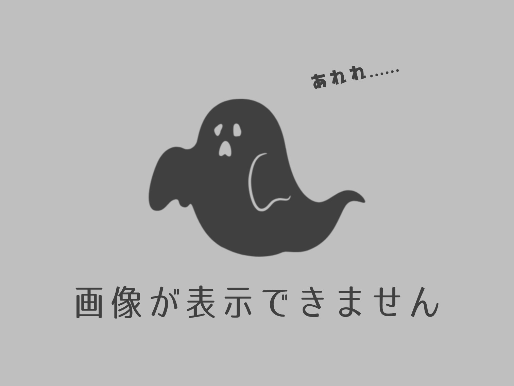
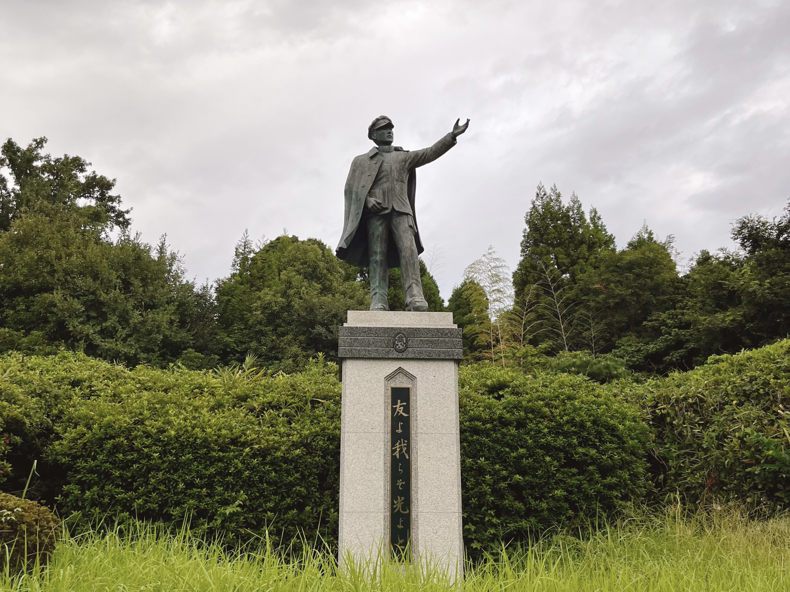
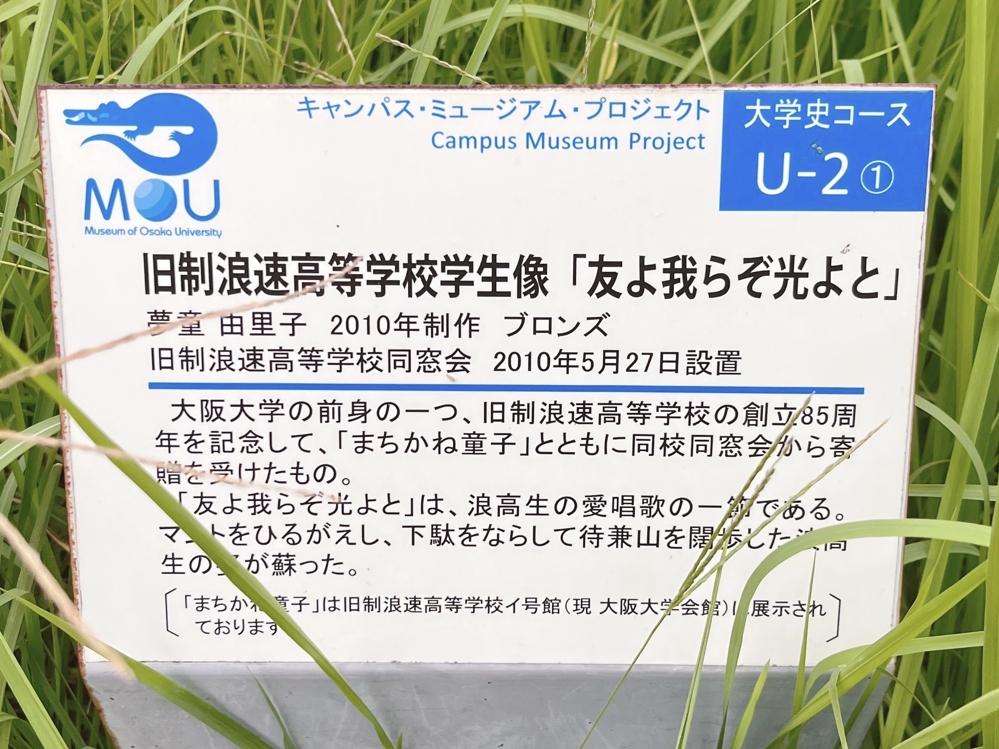

このページには問題があります
旧制浪速高等学校学生像「？？？？？？？？」
阪大坂側から豊中キャンパスに来たときに最初に目に入るオブジェ。同じポーズで並んで写真を撮りたいが、立ち入っていいかわからない。

阪大坂を登ったところ
旧制浪速高等学校学生像「友よ我らぞ光よと」
阪大坂側から豊中キャンパスに来たときに最初に目に入るオブジェ。同じポーズで並んで写真を撮りたいが、立ち入っていいかわからない。
阪大坂を登ったところ


